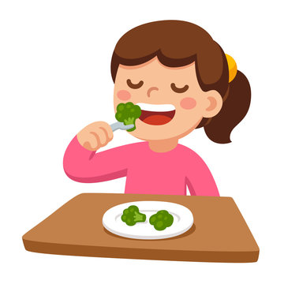

Food is not just for energy; it is a great source of happiness and comfort. My favorite meals are usually the ones that are freshly cooked and full of rich flavors. I love trying new dishes, but nothing beats the feeling of eating my favorite home-cooked meals with my family and friends.